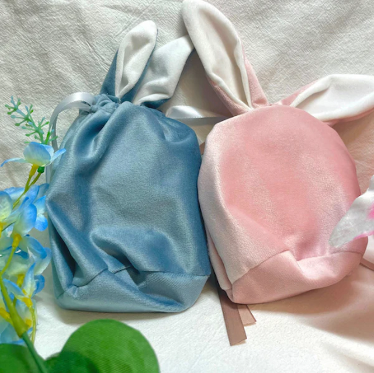

Are you looking for some cute accessories to showcase off to your friends? How about some charms for your phones? Or, maybe you might even want to purchase some cute stickers
to decorate your books or electronics? Well, you've come to the right place! wingBunny features a lot of cute accessories or charms mentioned above. This is a small business
own by my older sister and she has given me the rights to use her products to be featured in this website. Here are some of the products that she sells.
Stickers!
Originally known as her senioritis bunny stickers, my sister had changed the name to Lazy Bun Stickers as she graduated from college a few
years ago. Many customers relate to these stickers and are super adorable to have on your laptops. These quotes can be deemed as "motivational",
as many can relate to the messages being displayed on the stickers.
Earrings!
Earrings are most likely the star of all her products. wingBunny has many inspirators when it comes to making her earrings. As an OG fan of the famous
KPOP group, BTS, my sister created these really pretty earrings inspired by one of the group's song, "Yet to Come". Similar to the song, these earrings
show a similar vibe to the melody; beautiful and soft.
Phone Charms!
Phone charms are pretty popular as well! For her Halloween drops, this cat phone charm fits the vibes very well. It will accessorize
your phone to make it look very cute!
Mystery Bags!

Too many options to choose from? That's alright! If you love all of the wingBunny products and do not mind what you get, think about getting a
mystery bag! You get 3 random items from wingBunny, randomly choosen, for the price of $24.00! This could include earrings, sticker, and/or phone charms!